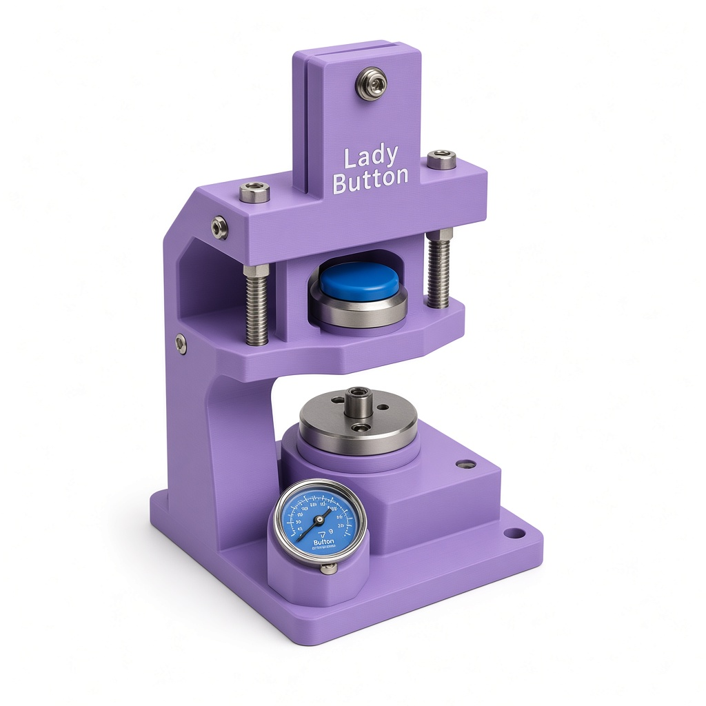
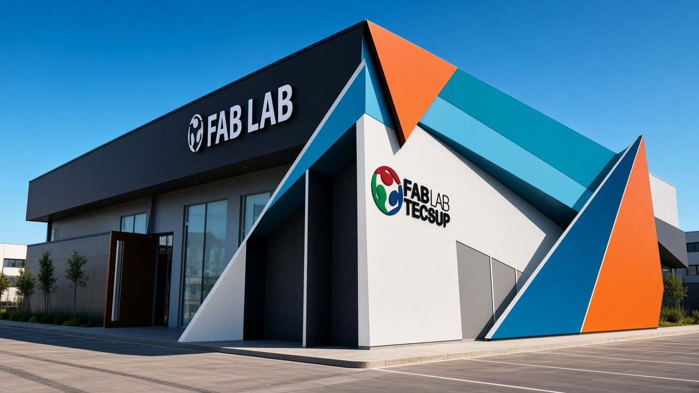
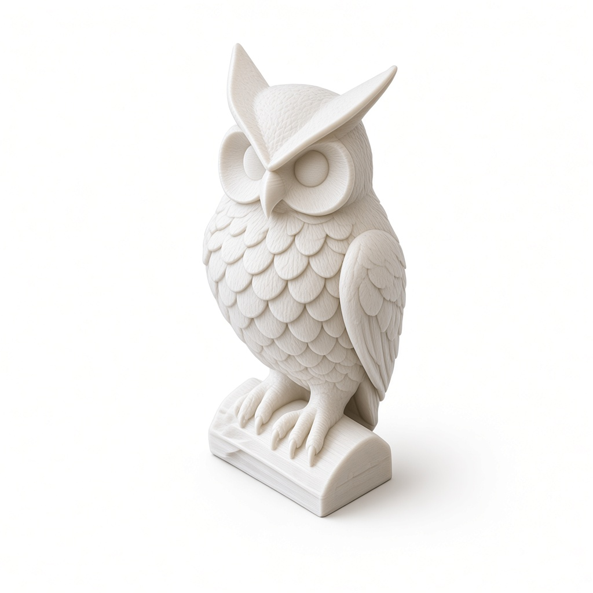
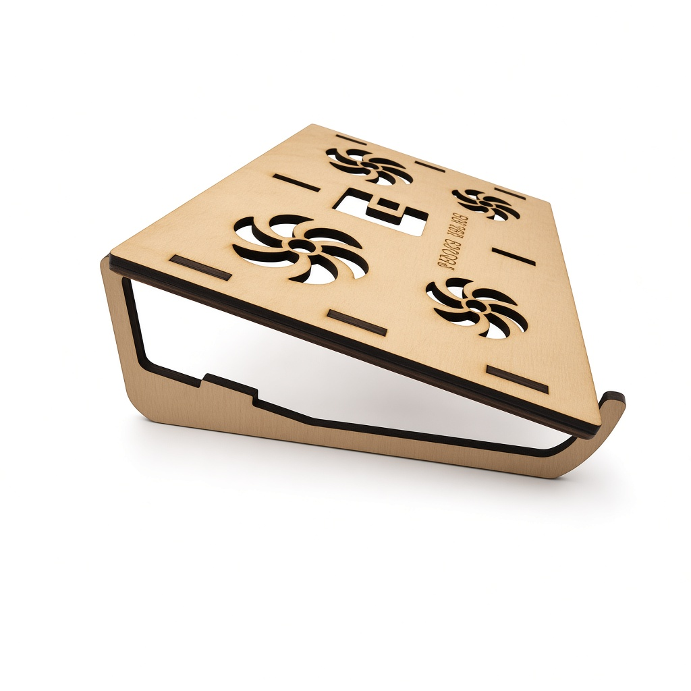

Servicios
Diseño que convierte ideas realidad


Metodología
De la idea al prototipo tangible
Acompañamos tu proyecto en cada fase del desarrollo técnico utilizando herramientas avanzadas de fabricación digital en Pasco.
01
Diseño y Modelado CAD
Transformamos tus bocetos e ideas en archivos vectoriales limpios (SVG, DXF) y modelos volumétricos 3D (STL, OBJ).
02
Prototipado Rápido
Selección de parámetros óptimos para impresión en PLA/Resina o corte preciso en acrílico, MDF y madera.
03
Ensamble y Acabado
Ajuste de tolerancias mecánicas, ensamble de piezas y preparación para prototipos funcionales o producción local.
+150
Proyectos Prototipados
3D & Láser
Equipamiento Maker
100%
Diseño Abierto
Pasco
Innovación Local
Recursos y Guías
Aprende a fabricar con nuestros tutoriales
Accede a guías abiertas sobre parámetros de impresión, preparación de vectores para láser y flujos de trabajo en el laboratorio.
Cómo pasar de una idea a un prototipo en 48 horas
Flujo recomendado: boceto, modelado, corte o impresión, ensamble y prueba.
Parámetros básicos de PLA para piezas resistentes
Relleno, altura de capa y orientación de pieza para resultados consistentes.